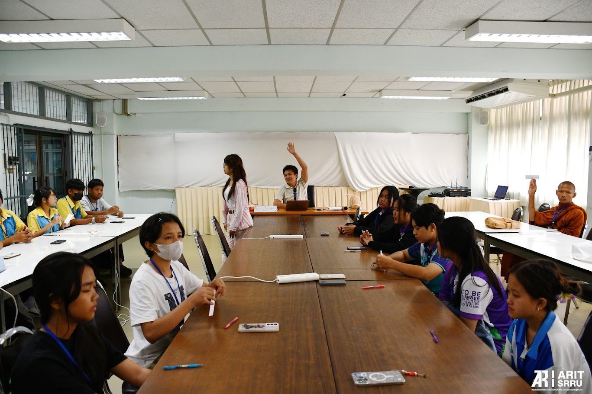
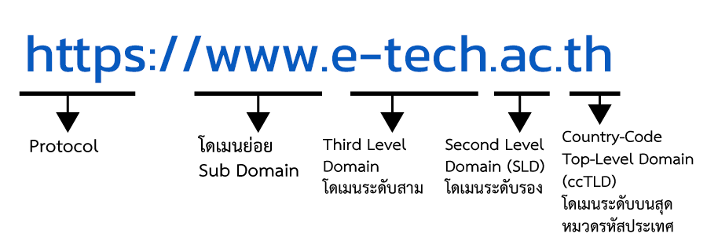
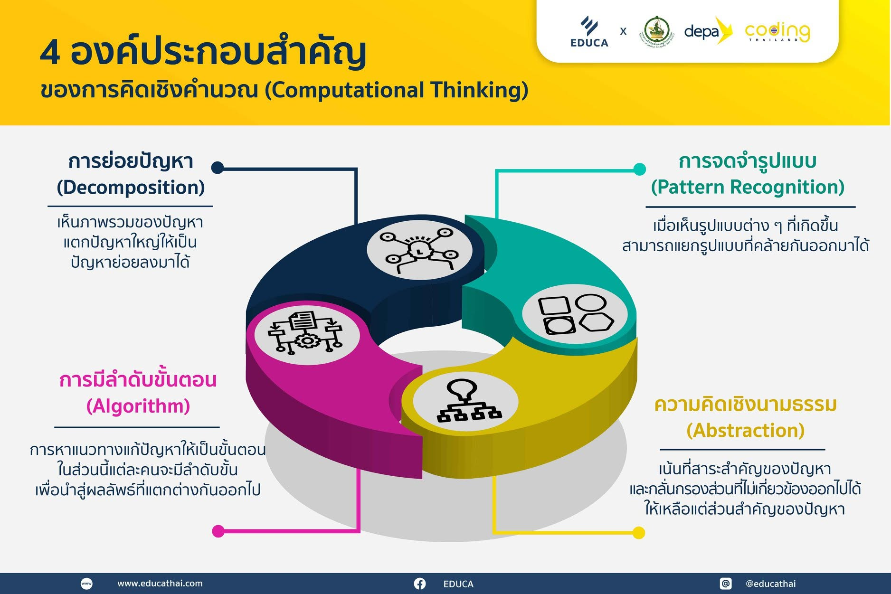
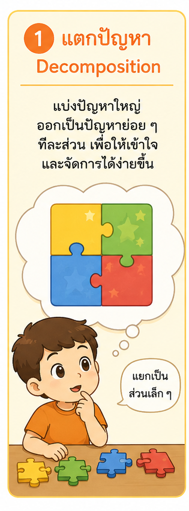
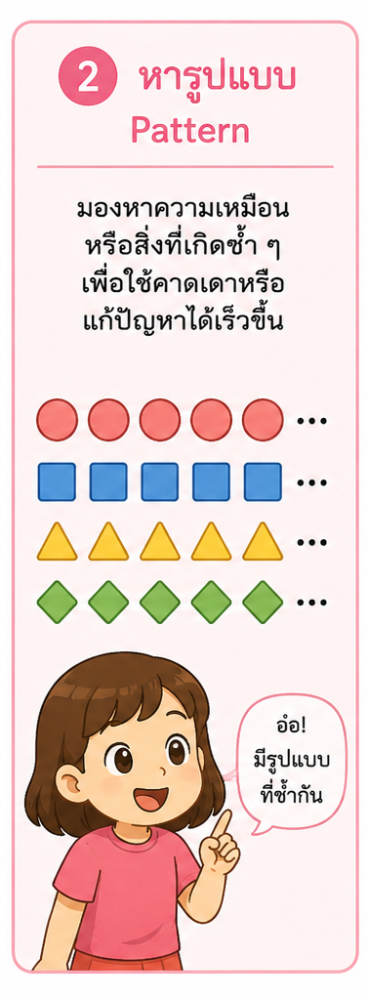
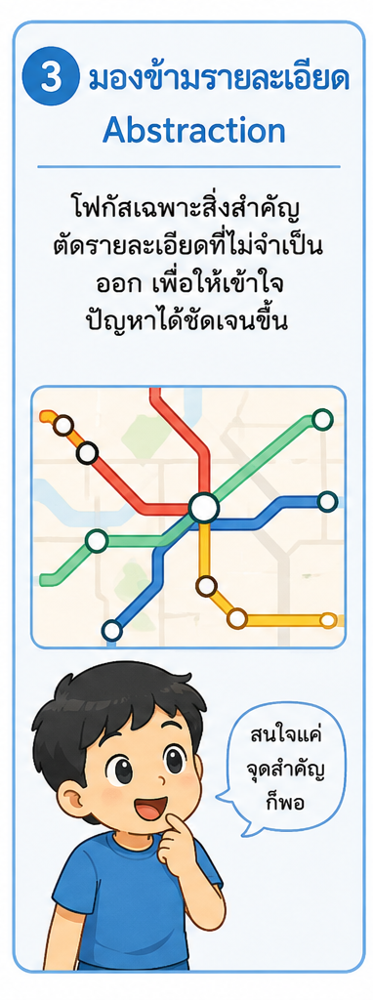
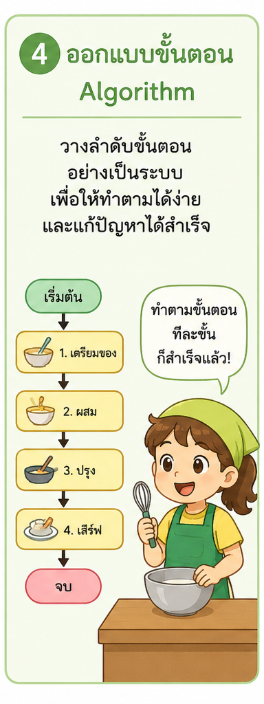
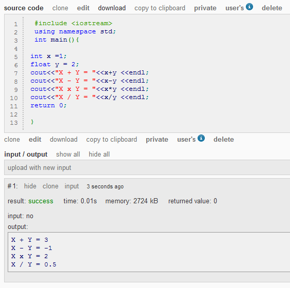
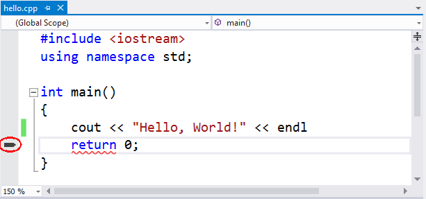

Introduction to
Programming
สำหรับนักเรียนระดับชั้นมัธยมศึกษาตอนปลาย • ประจำปี พ.ศ. 2569
ผศ.ดร.ธงชัย เจือจันทร์ — สาขาวิชาวิทยาการคอมพิวเตอร์
คณะวิทยาศาสตร์และเทคโนโลยี มหาวิทยาลัยราชภัฏสุรินทร์
#include <iostream> using namespace std; int main() { cout << "Hello World!"; return 0; }
Introduction to Programming
วัตถุประสงค์
นำทักษะการแก้ปัญหาอย่างเป็นระบบตามแนวคิดเชิงคำนวณ (Computational Thinking) มาต่อยอดสู่การเขียนโปรแกรมเบื้องต้น เพื่อแก้โจทย์ปัญหาในชีวิตประจำวัน
แนวทางการเรียน
ฝึกเขียนโปรแกรมแก้โจทย์ที่หลากหลายด้วยภาษา C++ เรียนสนุก ลงมือทำจริง มีเกมและ simulator ช่วย
สาระสำคัญของหลักสูตร
วันนี้เราจะได้เรียนอะไรบ้าง?
- อินเทอร์เน็ตและโดเมนเนม .th ทำงานอย่างไร
- การคิดเชิงคำนวณ — วิธีคิดแก้ปัญหาอย่างเป็นระบบ 4 เสาหลัก
- โปรแกรมคืออะไร และทำไมคำสั่งต้องชัดเจนและเรียงลำดับ
- เขียนโปรแกรมภาษา C++ ตัวแรก (Hello World)

โครงสร้างของชื่อโดเมน
ชื่อเว็บอ่านจากขวาไปซ้าย — .th คือโดเมนระดับบนสุดของประเทศไทย ดูแลโดย THNIC

การคิดเชิงคำนวณ — 4 องค์ประกอบสำคัญ

แตกปัญหาใหญ่ ให้เป็นชิ้นเล็ก ๆ
ปัญหาที่ดูยาก ถ้าซอยเป็นขั้นตอนเล็ก ๆ เราจะแก้ทีละชิ้นได้ง่ายขึ้นมาก
ตัวอย่าง: ทำต้มมาม่า → ต้มน้ำ → ใส่เส้น → ใส่เครื่องปรุง → รอ 3 นาที
คิดง่าย ๆ เหมือนการต่อเลโก้ เราไม่ได้สร้างทั้งหลังในทีเดียว แต่ต่อทีละก้อนจนเป็นรูป พอแยกปัญหาเป็นชิ้นเล็ก แต่ละชิ้นก็แก้ง่ายและตรวจหาจุดผิดได้สะดวกขึ้น

มองหาสิ่งที่ “ซ้ำ ๆ”
ถ้าเห็นรูปแบบที่ซ้ำเดิม เราจะทำนายตัวถัดไป และสั่งให้คอมทำซ้ำอัตโนมัติได้
ตัวอย่าง: สูตรคูณ → 2, 4, 6, 8, … เพิ่มทีละ 2 เสมอ
พอเราเจอสิ่งที่ทำซ้ำเดิม ๆ นั่นแหละคือจุดที่จะใช้ “การวนซ้ำ (Loop)” ในโปรแกรม สั่งเพียงครั้งเดียวให้คอมพิวเตอร์ทำซ้ำให้เอง ไม่ต้องเขียนคำสั่งเดิมหลายรอบ

เก็บแต่สิ่งสำคัญ ตัดส่วนที่ไม่จำเป็นทิ้ง
ไม่ต้องสนใจทุกรายละเอียด เอาเฉพาะที่จำเป็นต่อการแก้ปัญหา
ตัวอย่าง: แผนที่รถไฟฟ้า → ไม่วาดถนนจริงทุกเส้น แสดงแค่สถานีกับเส้นทาง
เหมือนการวาดการ์ตูนรูปคน ขีดไม่กี่เส้นก็รู้ว่าเป็นคน ไม่ต้องวาดเส้นผมทุกเส้น เราเลือกเก็บเฉพาะข้อมูลที่จำเป็นต่อการแก้ปัญหา แล้วตัดรายละเอียดที่ไม่เกี่ยวออกไป

ออกแบบ “ลำดับขั้นตอน” ให้ชัดเจน
ทำอะไรก่อน-หลัง ต้องเรียงให้ถูก ไม่งั้นผลลัพธ์จะผิด
ตัวอย่าง: แปรงฟัน → บีบยาสีฟัน → แปรง → บ้วนปาก → ล้างแปรง
ลำดับสำคัญมาก ถ้าบ้วนปากก่อนแปรงฟันก็ไม่สะอาด โปรแกรมก็เช่นกัน — สลับบรรทัดคำสั่งผิดที่ ผลลัพธ์จะเปลี่ยนทันที เราจึงต้องวางขั้นตอนให้ถูกก่อนเขียนโค้ด

โปรแกรม = ภาษาที่เราใช้สั่งคอมพิวเตอร์
- เขียน โค้ด C++ เป็นคำสั่ง
- Compile = แปลภาษาให้คอมเข้าใจ
- Run = สั่งทำงาน เห็นผลลัพธ์
วันนี้เราใช้ online compiler ไม่ต้องลงโปรแกรม เปิดเว็บก็เขียนโค้ดและรันดูผลได้เลย

#include <iostream>ขอเครื่องมือสำหรับ “พิมพ์/รับ” ข้อความ
int main()จุดเริ่มต้นของโปรแกรม คอมเริ่มทำงานตรงนี้
cout << "..."สั่งให้ “พิมพ์ข้อความ” ออกหน้าจอ
return 0;บอกว่าโปรแกรมจบเรียบร้อยดี
ให้น้องพิมพ์ตามทีละบรรทัดแล้วกด Run จากนั้นลองเปลี่ยนข้อความในเครื่องหมาย " " เป็นชื่อตัวเอง จะเห็นชัดว่าแก้โค้ดตรงไหน ผลลัพธ์บนหน้าจอก็เปลี่ยนตามทันที
เขียนให้ถูกไวยากรณ์ (Syntax)
- ทุกคำสั่งต้องเขียนตาม กฎไวยากรณ์ ของภาษา C++
- ลืมเครื่องหมาย ; ท้ายคำสั่ง = เกิด error
- error ไม่น่ากลัว — มันบอกว่าพิมพ์ผิดตรงไหน เพื่อให้แก้ได้
การอ่าน error ให้เข้าใจ คือทักษะสำคัญของโปรแกรมเมอร์ — เจอแล้วแก้ แล้วรันใหม่ได้เสมอ

พรุ่งนี้…
ลุย C++ เต็มตัว!
ตัวแปร, เงื่อนไข if-else, การวนซ้ำ และเกมแข่งเขียนโค้ด รอเราอยู่
THNIC Academy × มหาวิทยาลัยราชภัฏสุรินทร์